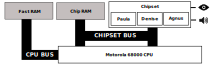

This article is part of a study about the ports of Another World. It is highly recommended to read Another World 101 before reading this.
The story of the Amiga starts in the middle of 1982 when Larry Kaplan gave a call to Jay Miner. Both men had worked at Atari in the 70s. Both had left since. Kaplan because of lack of recognition and Miner over being barred by management to use the dreamy yet expensive Motorola 68000 CPU.
After leaving Atari, Kaplan had founded Activision. Upon being approached by investors to develop a new game platform, he got in touch with the most brilliant people he knew. Miner accepted to run the hardware side of the newly formed company, "Hi-Toro". The system was code-named "Lorraine".
By late 1983 a prototype was assembled. Lacking an OS the machine still impressed the visitor of January 1984 Consumer Electronics Show (CES) thanks to its Boing Ball demo, able to move huge sprites at 60fps. The first machine was announced in 1985 as "The Amiga from Commodore", later renamed the Amiga 1000.
Trivia: The Amiga 1000 could not boot by themselves, they had no ROM. The bootloader was on a floppy and you better not lose or damage it!
By 1985, after a series of missteps, Commodore found itself in an alarming low cash situation. Thomas Rattigan, then COO, made drastic changes. Besides an ambitious plan that covered almost all of the company's operations, he refined the Amiga 1000 into two products. There would be a new high-end version aimed at the creative market called the Amiga 2000 and there would be a new low-cost version to take over for the Commodore 64 in the low-end market. The latter would be called the Amiga 500.
The Amiga 500, also known as the A500, was released in 1987. Powered by a 68000 running at 7.16MHz with 512KiB of RAM. It became an immensely successful machine loved by players, programmers, and in particular the people from the demo-scene. It was Commodore second best selling product with an estimated 6 millions units shipped from 1987 to 1991[1][2].
The A500 was gifted with a pair of ROMs with integrated Kickstart bootstrap. That was a significant improvement over the A1000 where users had to boot with Kickstart on a floppy and then switch to the floppy of the program (game or Workbench) they wanted to run. It was possible to connect a HDD to an A500 but these were were big clunky 5.25" or 3.5" units. Later models such as the A1200 (a.k.a the greatest machine ever created) had built-in space to welcome a 2,5" HDD.
Since its technology was originally intended to power a game console[3][4], the Amiga was not built around a "big iron" CPU with audio and video capability as an afterthought like most computers of the time. The beloved 32/16-bit 68000 found itself operating alongside with a Chipset hosting three powerful chips called Paula (audio), Denise (video), and Agnus (data manipulation and synchronization).

The clean design with a memory system offering not only flat addressing but also shared RAM accessible by both the CPU and the Chipset contributed immensely to the Amiga popularity with developers. In comparison, neither the Sega Genesis nor the Nintendo SNES, two powerful systems released years later (respectively Jan 1989 and Nov 1990) had shared memory.
The Chipset Bus has a complex priority system taking advantage of the 68000 being inactive on even cycles. The Chipset DMA attempts to use only the odd cycles to gracefully multiplex bus access without impacting the CPU. Things were not always perfect. Agnus in particular has a tendency to make itself comfy to the point the 68000 starves[5].
To solve this issue, customers could purchase a "Fast RAM" extension with a dedicated "CPU Bus" to the 68000. With 68000 instructions hosted there[6], the CPU was not subject to starvation when the Blitter DMA channel was active. This effectively double the execution speed of the 68000.
The video system is entirely driven by Denise, offering a total of twenty graphics modes[7]. The most popular resolution was 320x200 which aspect ratio of 1.6 did not match the monitor of the time (4/3 = 1.3). The aspect ratio results in a distortion when the framebuffer is pushed to the CRT monitor.
The framebuffer is not stored continuously but rather in separate areas of memory, called bitplanes. Up to five[8] bitplanes of 8 KiB can be allocated resulting in 5-bit per pixel allowing 32 color indexes. At first sight this planar approach looks like a clumsy design (especially to a developer with a PC background) but Agnus and especially its Blitter provide a lot of clarity to the overall.
The palette color system is based on a 4-bit per channel RGB color space. The resulting 12-bit per color allow up to 4,096 different colors to be defined which was much more than typically found on similarly priced computers of the era.
Many tricks allowed to display more colors. Like the Copper to change the palette on HSYNC. I won't get into Hold-And-Modify which allowed breath-taking photo-realistic 4,096 colors on screen.
The next two images represent the two opposite sides of the RGB color space. With black located at coordinate (0x0, 0x0, 0x0), red at (0xF, 0x0, 0x0), green at (0x0, 0xF, 0x0) blue at (0x0, 0x0, 0xF), and white located at (0xF, 0xF, 0xF). These colorful images illustrate well the creative freedom granted to graphists.
|
|
|
Another World on Amiga is not, properly speaking, a port. Since the A500 was the development machine, it is the original version built from 1989 to 1991 by then 21 years old Eric Chahi working alone[9] in his bedroom.
Photo Credit: "GDC 2011, Eric Chahi's Retro Postmortem: Another World"
Two reasons made the Amiga the perfect development machine. First, the GenLock allowed to super-impose a video camera output onto the computer own outputs which enabled rotoscoping. Second, and most importantly, the Amiga Agnus immensely facilitated polygons rendering.
The idea to have a game based exclusively on polygons came from a wrong guess that "Dragon's Lair, Escape from Singe's Castle," on Amiga was using them[10]. The question Eric needed to answer was if he could find out how to do it with a reasonable framerate. It is during this R&D phase that the Amiga's Blitter played a key role.
The Blitter documentation mentions a feature called "Area Fill Mode". We are not talking about fancy 3-D projection or texturing here. The Blitter operates in screen-space on lines of bits with the ability to "fill the blank". The way it works is by scanning right to left[11]. As long as the Blitter sees 0s, nothing happens. As soon as the first 1 is passed, the Blitter will fill the line with 1s until the next 1. The drawing from the documentation illustrates well how it works. Notice that even concave polygon can be rendered correctly with this method.
bit array before bit array after
______________________ ______________________
| | | |
| | | |
| | | |
| 1 1 1 1 | | 11111 11111 |
| 1 1 1 1 | | 1111 1111 |
| 1 1 1 1 | | 111 111 |
| 11 11 | | 11 11 |
| 1 1 1 1 | | 111 111 |
| 1 1 1 1 | | 1111 1111 |
| 1 1 1 1 | | 11111 11111 |
| | | |
| | | |
|______________________| |______________________|
This "Area Fill Mode" solution only leads to a second problem which is how to draw the "borders" of the polygon. If you look closely at the drawing above you can see this is not a standard Bresenham's line algorithm since horizontal lines must be skipped. Thankfully the Amiga designer gifted the Blitter with a "line draw mode"[12].
We are not done. There are still problems. First, "drawing the lines and then fill area" must be done four times (once for each bitplane) which seems very costly. Second, the engine needs to render hundreds of polygons. The Blitter needs a clean buffer full of zeros and nice borders made of 1s to operate. After a few polygons the framebuffer would assuredly looks like a soup of bits very likely to confuse Agnus. Lastly, the Blitter only output 1s but we need to be able to output zero in some of the four bitplanes to generate the proper 4-bit color.
The solution to these issues is to configure the Blitter A, B, and C inputs[13]. The process is better explained by
Blogger Scali in his blog[14].
... there is a solution to this problem, and it is not even that difficult. The blitter can render anywhere in chipmem, so it is easy to just set up a temporary clean buffer, a ‘scratchpad’, and render the polygon into that. Then you copy it to the actual screen area using a masked blit operation. This is also affectionately known as a ‘cookie cut’. It is basically the same sort of operation that you would use with 2D bitmaps, where you only write pixels when they are set in the source image, and leave the target pixels untouched otherwise (a logical OR operation), a simple form of transparency. This will combine the polygons properly on screen.
In fact, perhaps this would be a good time to explain the blitter in a bit more detail. The blitter has 3 inputs and 1 output. These are all handled by DMA, so it can run completely independently from the CPU, once it is set up. The 3 inputs can be combined via logical operations, so-called min-terms. The result is then written to the output channel. In the case of a masked blit, you would basically perform an operation like this:
output = (mask AND bitmap) OR (NOT mask AND output)
- Scali's OpenBlog™
With the knowledge of the Blitter inputs, we know have the full picture of what is required to render each polygon.
It was no pleasure cruise but it did the job. The effort was well worth it since the routine was able to handle up to 50 polygons (depending on their size) at 20 frames per second. Which takes us to the second problem to tackle.
As fast as the Blitter could be to draw polygons it was still not fast enough creatively speaking. To make things visually appealing, each frame is made of thousands of polygons. Some polygons are so small (1x1 called pixigones) they do not justify the overhead. One of the first background in the game (when Lester emerges from the pool) is made of 981 polygons.
The solution was to cache the background in a special buffer called BKGD with a simple copy. Once again this was a task tailor made for the Blitter.
The Blitter is one of the two co-processors in the Amiga. Part of the Agnus chip, it is used to copy rectangular blocks of memory around and to draw lines. When copying memory, it is approximately twice as fast as the 68000, able to move almost four megabytes per second. It can draw lines at almost a million pixels per second.
- Amiga Developer CD v2.1 (OS 3.5)
With a rate of 4,000 bytes per milliseconds, blitting the BKGD buffer at the start of each new frame took "only" 8 ms.
Trivia: Even though Another World was a polished game, some edges were left "sharp". If a player tries to be smart during the wheel copy protection quiz and press "c" to enter a code to jump to gameplay, the screen turns green and the Amiga freezes. The only way out is a hard reset.
Even though the 68000 CPU can write 16 bits at a time, clearing a framebuffer was also likely done with the Blitter. The Amiga documentation actually has a code sample "clearmem"[15] which relies on the Blitter to clear 128KiB of RAM.
Another World on Atari ST.
| ^ | [ 1] | Wikipedia: Amiga 500 |
| ^ | [ 2] | Commodore top seller was the C64 with 17 millions units sold. |
| ^ | [ 3] | Commodore: The Amiga Years |
| ^ | [ 4] | Commodore: The Final Years |
| ^ | [ 5] | Amiga Chip RAM |
| ^ | [ 6] | Wikipedia: Amiga Hardware |
| ^ | [ 7] | Amiga Screen Modes |
| ^ | [ 8] | Amiga Real-time 3D Graphics |
| ^ | [ 9] | The music was composed by Jean-François Freitas. |
| ^ | [10] | Classic Game Postmortem - Another World |
| ^ | [11] | In area fill mode, the blitter has to be in descending mode. Thanks to @DrSlem for pointing this out.. |
| ^ | [12] | 6 Blitter Hardware / Area Fill Mode |
| ^ | [13] | 6 Blitter Hardware / DMA channel |
| ^ | [14] | Just keeping it real, part 3 |
| ^ | [15] | Amiga Documentation, 'Example: Clearmem' |